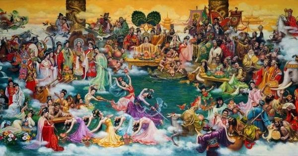
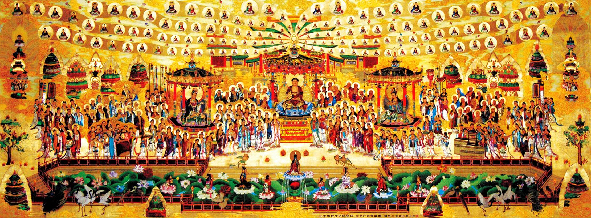

昆仑史曲 第二次天地大戰
十一，九月九日，天河大会

不久的九月九天河大会上，十方仙神云集共议天国大事，此会首要议题即是玄龙一案，十方众仙神深知释放玄龙不是儿戏，怕他出来又要大打出手，但又碍着 九宫娘娘的面子，真是放也不是，不放也不成。最后，佛祖释迦牟尼提案：对已经压封了的玄龙，能出自出，顺其自然。全会一致同意，纷纷折服释迦佛高见。
第二次天地大战，经历了天地大战、东西方天神大战、炎黄大战三个阶段，整整打了一万年，至此结束。
错误是不可避免的。从两次天地大战看，即使是天尊们、对生命及宇宙的万有，也会有一个认识过程。天河大会决定，以后不再强渡，只搞普渡。宣告了天地 大战的永远结束。
今天，当女神功学人捧起《修行者》细细品读，耳边尤自出现那响彻云霄、振聋发聩的“汉”声，和冲锋陷阵、血洒郊原的场景。为了保卫地球生命，为了保住东方古族，我们跟着龙爷下来了、我们宁死不屈的战斗了，我们无悔无怨，无怨无悔！
回首自盘古爷开天辟地，观音娘建大罗金仙国到经历了八百万年 的两次天地大战，我们只有泪流满面的“回头一笑”。正如武陵春娘娘的词曲：“波涛汹涌渐已干，爱爱恨恨一笑泯，心海湖平月光明，风雨已成晴”。
翻开中国历史课本，炎黄大战、黄帝战蚩尤的内容已经有部分以“传说”记录在册，虽然并不准确和太简单了点。
（一）. 玄女作《易》。其显意是为了让子孙后代们在地球上生存下来而需要的预测，密意则是回归功法。九娘把《易》密授于八妖，八妖老姆也尊嘱伺机传给了玄龙。
（二）. 八妖老姆用图像告诉玄龙，要他随时注意雪山顶上那朵青莲。那是玄女的信号，一旦金莲开放，就是大日如来允许你出来了。你就立即行功，里应外合从雪山下冲出来。
（三）. 八妖老姆天天看守、也是陪伴着玄龙，要他好好练功开山。她不断通过青潭从海底给他运来能量，让他抓紧把山从下向上开通。
（四）． 玄龙开山没有工具，就是用嘴喷火烧，这要消耗大量能量。八妖怕地球进入冰河期再无法从海底运能量来，就连骂带哄叫他快干活。白娘不放心，悄悄来看望。见玄龙费力不得法，就传了他“浩气凌然，至高无上，扬眉吐气”高招、和“白娘翻天”的拓宽通道之法。
（五）．雪山青莲终于开了！龙爷奋力上冲。天崩地裂岩石碎，一代枭龙又出山！
姮娥飘来，拉玄龙去月台会见九天玄女。刚到月台就见玄女的领管地三山起火，玄女飞身赴救。玄龙刚下月台就被云中客带十万佛兵围住。云中客剑剑绝杀如对仇敌，玄龙爷虚招自护迷惑不解。白娘和珠王赶来，拦住云中客，放跑玄龙。
玄龙去连山，想救出自己被压封的波斯战团，但因能量不足破不了封。珠王告诉他，要先上九霄采天心丹，再跃入东海行龙卷风采海心丹才能恢复能量。玄龙依计而行。
（六）．玄龙具足能量，正准备再去连山，不料云中客追来，霞光剑步步紧逼。玄龙用凌云剑左拨右防，寻个机会抽身就跑，云中客紧紧相追……
五千年来，玄龙大帝因为压封在玉龙雪山回不了九天，又不甘寂寞，便在地球上不断转世。中了西洋魔法的彩云娘娘也没有回九天，而且因碧霞元君职位被顶替也回不了泰山。几千年来，她仗剑独行天下游，寻找往日大战中失散转世的旧部，自己也多次转世。她们的转世倒是为中国历史和人类历史增添了无数极其华丽的篇章和 不少感人肺腑、催人泪下的故事。
“不再强渡”的天地共识使得人类终于能稳稳的“屯”居在地球----虽然经历了两次大战的血腥，虽然寺庙里的大罗刹女 被子孙们塑成妖魔形象让人踩在脚下。

楞严会后，进入了末法时期。漂流地球的生命该回归了，但可怕的是平均生命能量越来越低。虽然几千年来修行队伍从未断绝，可也随着社会进化不断缩小，而且修行方法不断“变味”，甚至出现了“职业和尚”，坐沙发唸佛号，把庙门数票钱， 把清净修行地变成热闹旅游点的地步。真叫人看到了释佛预言的佛法被灭的危险。在这关键时刻，玄龙大帝又一次转世并苦修有成，担当起了传授修行真经、组织回归队伍的大任。
现在世上，这个唯一能使现世凡人修出去的功法就是昆仑中华瑜伽它的核心功法九阴功前六式的实质内含就是上边六段故事，它的功理就是第七式的名字“海底捞月”----渡回天地大战中阵亡流落地球的各战团将士。
| 上 一 頁 | 下 一 頁 | 回 主 頁 |